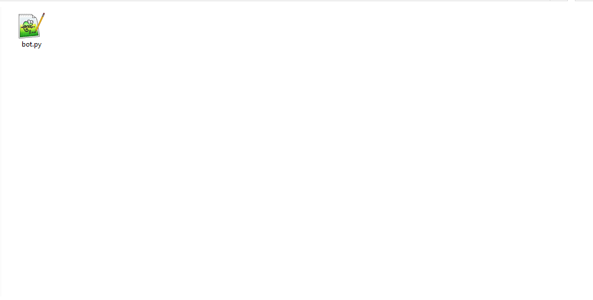

Alright, so, to start making your Discord Bot, you need to install the nessesary components.
Once you have installed all of them, make a bot.py file. So it should look like: 
Please note the picture of the file will be different to yours, as I use Notepad++ as my text editor.
Open the file with your text editor, and make it the main app for .py files (Not nessesary), and put this code in it:
import discord
from discord.ext import commands
client = commands.Bot(command_prefix = '!')
client.run('')
Alright, file, check, everything installed, check, now to making the bot.
So, to get started, visit the Discord Developer Portal, and go Create Application. Name it whatever you want (e.g. BeepBoop). Then click bot and Create Bot. Click yes. Next, copy the token and put it in the bot.py where it says client.run('token') (replace token with the token). Now remember this, DO NOT SHARE YOUR TOKEN WITH ANYONE.
This is very simple, it is a simple group of code, and can be edited and pasted to make more commands. Below is the code.
@client.command()
async def ping(ctx):
await ctx.send(f'Pong!')
So, if you have done it correctly, this is what you should have.
import discord
from discord.ext import commands
client = commands.Bot(command_prefix = '!')
@client.command()
async def ping(ctx):
await ctx.send(f'Pong!')
client.run('NzY3asfGHysdggjsabHO.ThisIs.NoT_aLEGittOkenM8soIGNoRe')
So... problem. I, EeveeTV does not know how to start the bot. I know how to start it in VS Code, but not any other one, so... INSTALL VS CODE TO RUN IT. Then when you have installed and opened the file in it, do Ctrl + F5 for Windows and I don't know for MacOs and Linux, so just click the run button in the top left, and do Run without Debugging. And there you go.